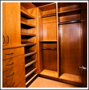
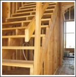
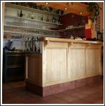

T H E C O M P L E T E J O I N E R Y S O L U T I O N
I Welcome to the website of London Joinery. With our manufacturing facilities in the West Country, we are able to offer direct "hands-on" management of a project, with the added benefit of competitive manufacturing costs.
At London Joinery, we specialise in the manufacture of high quality purpose made joinery, ranging from staircases, counters, bars and doors & windows. Bespoke products are supplied to a wide client base, including 'blue chip' companies, developers, building contractors, shopfitters, architects, designers and domestic clients.
Please browse the pages, if what you want is not featured then please ask us as we are always willing to go that step further. We believe, above all, that providing good service to our clients is of the utmost importance.
  
The above images are examples of typical commissions. Please view our portfolio for more examples of recently completed work.